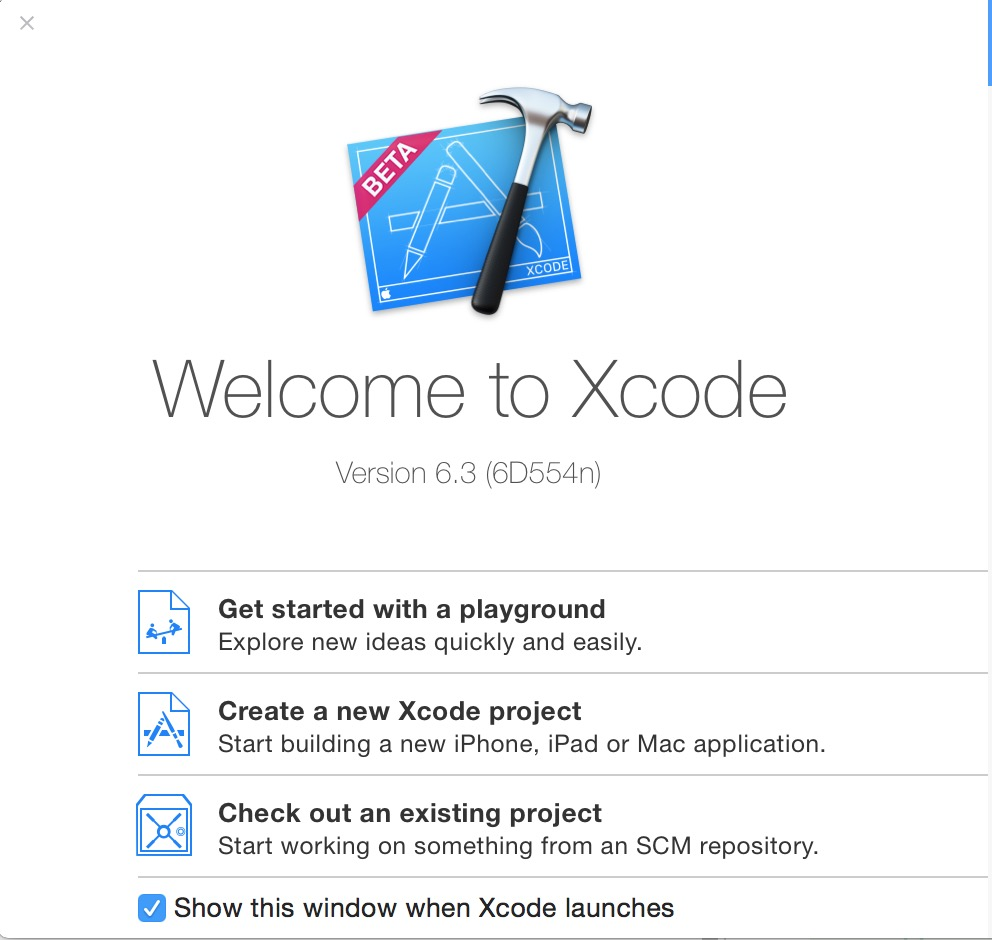
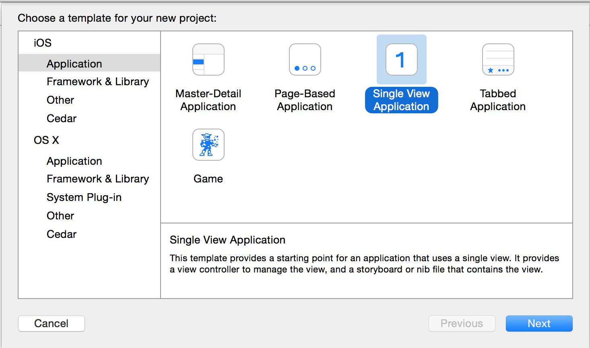
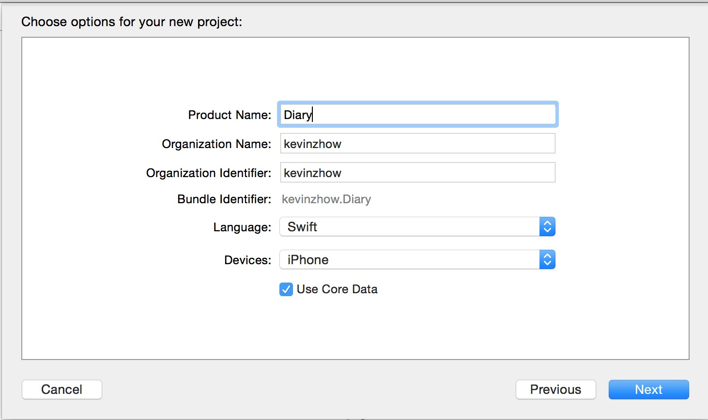
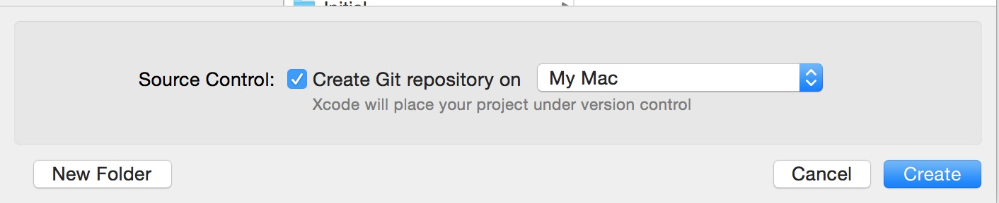
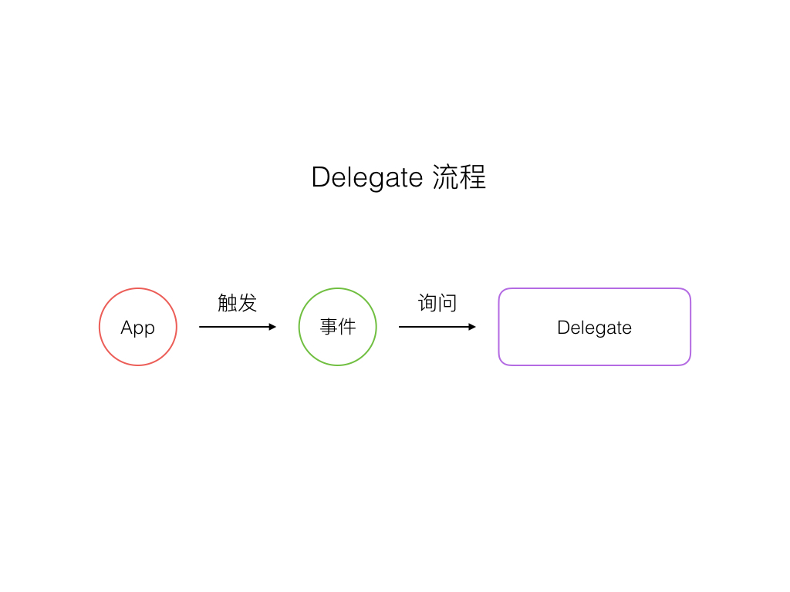
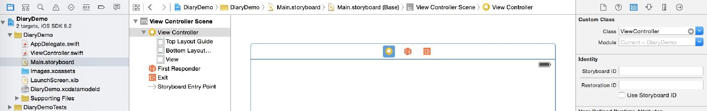
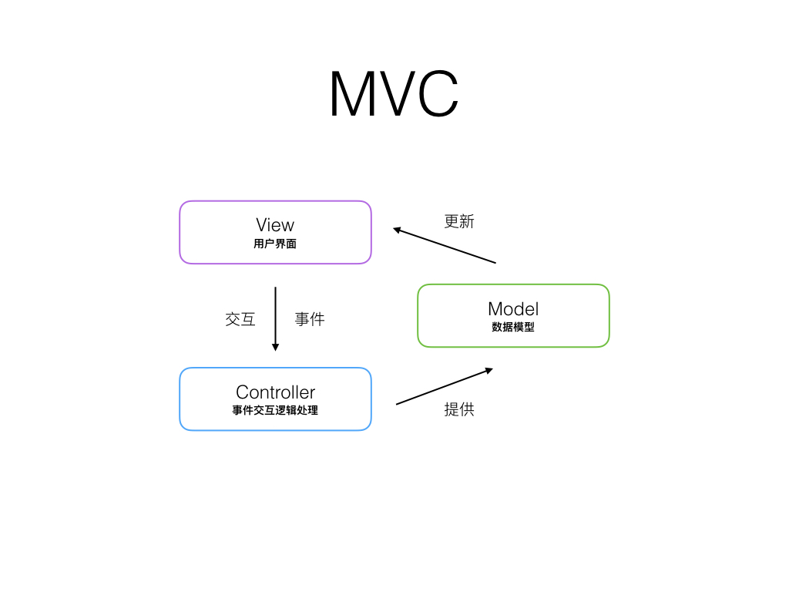
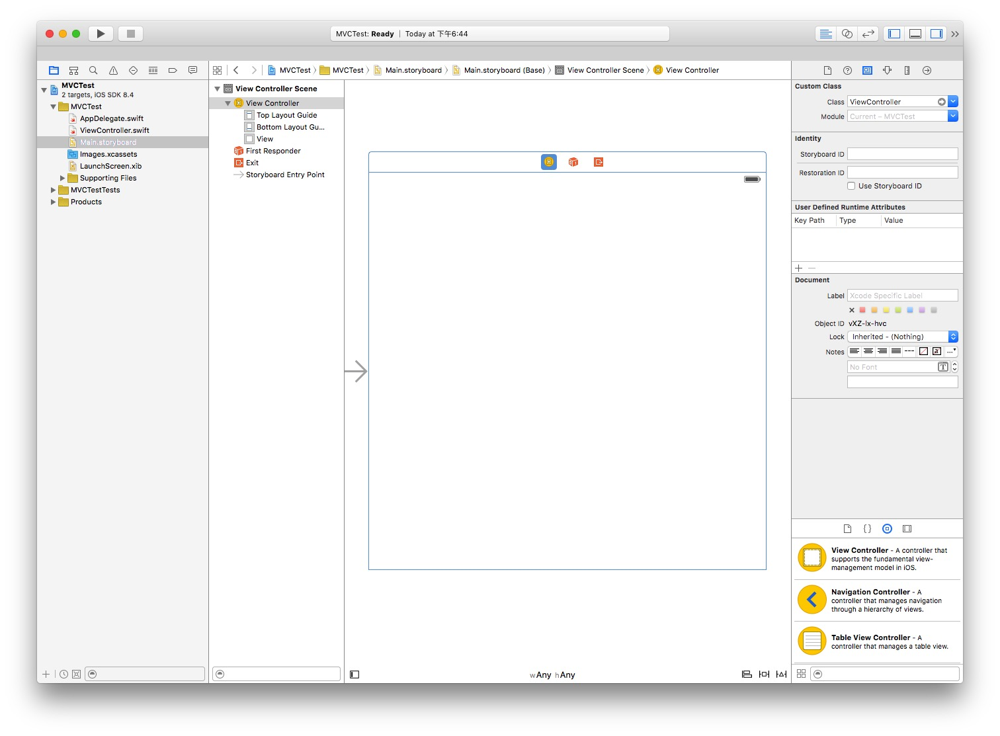

我想这可能是一切魔法和困惑的开始， iOS App 从哪里开始？
传统的 Objective-C 项目要更低层一些，但是从 Swift 开始，已经隐藏了部分底层细节。既然我们用 Swift 开始开发生涯，那此刻对我们来说，了解那么多徒增困扰，不如先把鸭子煮熟吧。
你可以在 Github 找到相关代码。
创建第一个 App，这是一个又兴奋又激动的过程，虽然过程中会有很多你不明白的地方，没关系，后面我们会逐一了解。
1.打开 Xcode，点击 Create a new project

2.选择 Single View Application 创建一个空的 App

3.设置 App 的基本信息，选择 Swift 以及勾选 Core Data

4.启用 Git 来管理代码

创建完你的第一个 Swift App 之后，当你按下 Command ＋ R ，你的 App 就会从这个文件这个方法开始。
func application(application: UIApplication,
didFinishLaunchingWithOptions
launchOptions: [NSObject: AnyObject]?) -> Bool {
// Override point for customization after
// application launch.
return true
}
可能这已经让人足够困惑了，它的参数都表示什么？先不管它们的形式，这句话翻译成汉语就是你的程序在问你 “程序完成启动了吗？”。
请带着你对这几行英文的思考，先听我讲个故事。
很久很久以前，在程序世界最开始的时候，那个世界是很单纯的，你告诉程序你想知道 10000＋2399 是多少，他计算一番后告诉你是 12399，后来他们记忆能力有所发展，你可以告诉他，a 是 10000, b 是 2399， 当你问他 a + b 是多少的时候，他能知道你在问 10000＋2399，于是也可以告诉你 12399。
再到后来，他们变的更聪明了，你可以告诉计算机，把两个数字算到一起这个事情叫做加法，如果我告诉你 a 和 b ，让你用加法处理一下，你就把它们加起来。
他记住了，为了让这件事看起来很酷，做一件事情被命名为函数。a 和 b 这种某个数值的代号被命名为变量。
单纯的世界开始变得复杂，因为一切都要看起来听起来很酷。
当你进入这个世界的时候，这个世界已经发展出了一种东西叫做约定。
每一个 App 都会和你签订下契约。
你不再需要从零开始教计算机做每一件事情，绝大部分事情都已经随着操作系统这个大脑记录进去，而手机 App 更像这个操作系统的孩子，你的角色更像回答 App 一切的问题的老师。

你需要做的就是如何严谨完美地回答这些问题，并提供一个清晰的思路给它。
AppDelegate 的意思，就是你要在这个文件里解答 App 一些最基础的问题，App 会在这里问：“我该不该启动？”、“我进入后台了该不该干什么？”、“我要被系统大人关闭了，我该怎么办？”等等之类的问题。
所以你应该明白刚才那个问题了。
你第一个签定了契约的 App 问你，我是不是可以完成启动啦？
如果你简单地回答：可以，那么它就会跑到 StoryBoard 里面寻找故事的开始，进入下一个充满有趣问题的世界。
为什么呢？因为这都是约定。
每一个界面一般来说都会对应一个 View Controller。

Main.Storyboard 里的 View Controller 界面通过右上角的 Custom Class 指定了使用 ViewController 作为大脑。他会寻找 ViewController 这个类。 而 ViewController 就定义在左边的 ViewController.swift 里面。
import UIKit
class ViewController: UIViewController {
override func viewDidLoad() {
super.viewDidLoad()
// Do any additional setup after loading the view,
// typically from a nib.
}
override func didReceiveMemoryWarning() {
super.didReceiveMemoryWarning()
// Dispose of any resources that can be recreated.
}
}
你可以按着键盘的 option 点击 viewDidLoad ，来看看这个莫名其妙的东西是什么。
Called after the controller's view is loaded into memory.
我想你可能更好奇了，这到底是做什么用的，让我们来做一个小实验。
在 super.viewDidLoad() 的后面插入一句
self.view.backgroundColor = UIColor.blackColor()
这时你再次运行 App，App 的界面背景就变成了黑色。
以上发生的一切依旧有所疑惑，为什么运行后会默认显示一个白色的背景？为什么我在 self.view.backgroundColor = UIColor.blackColor() 这句代码之后，界面就会变成黑色呢？
界面与代码是如何连接起来的呢？这就牵扯到一个 MVC 的概念了。
如果你是一个编程新手，MVC 可能并不是一个好理解的概念，但是讲明白了也很简单，MVC 分别为 Model（数据模型）、 View（视图）、Controller（控制器）。

在刚才的 App 里，ViewControler.swift 里的代码就是 Controller，而 Main.storyboard 里的 View Controller Scene 就是 View。

在上面的截图里，中间灰色箭头所指的便是我们的 View，当你运行 App 的时候，App 会自动以灰色箭头所指示的界面作为初始界面。在右上角的 Custom Class 里，Class 一栏写的是 ViewController，这正是 ViewController.swift 里的类名称 class ViewController: UIViewController。通过这种约束，Controller 和 View 便绑定到了一起。
Model 去哪里了？在这个简单的 App 里，我们还没有用到数据模型，别着急，后面我们就会碰到。
生命周期（Life Cycle）也是一个相对疑惑但又很好理解的概念。
ViewController 的生命周期为
虽然叫做生命周期，但是并不是必定环状执行的，举个例子，微信的聊天对话列表界面，首先会执行 viewDidLoad 准备这个界面，当界面准备就绪可以显示的时候，viewWillAppear 会执行，界面显示出来后，会执行 viewDidAppear，这时候你点击了其中一个对话，然后再返回到对话列表，这时候 viewWillAppear 和 viewDidAppear 会再次执行，但是 viewDidLoad 不会再次执行。